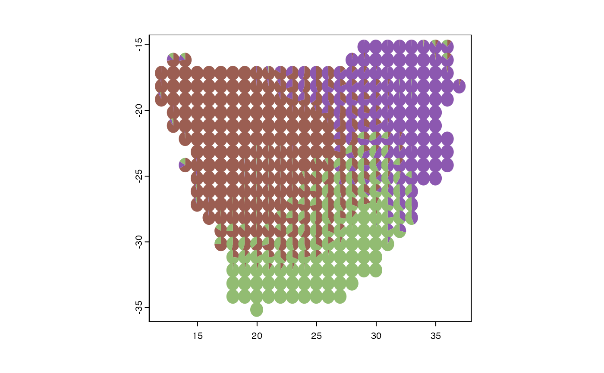

Generates grade of membership, “admixture”, “topic” or “Latent Dirichlet Allocation” models, by representing sampling units as partial memberships in multiple groups. It can group regions based on phylogenetic information or functional traits.
fitgom(
x,
trait = NULL,
cut = NULL,
phy = NULL,
bin = 10,
na.rm = FALSE,
K,
shape = NULL,
initopics = NULL,
tol = 0.1,
bf = TRUE,
kill = 2,
ord = TRUE,
verb = 1,
...
)A community data in long format with one column representing sites labeled “grids” and another column representing species labeled “species”.
A data frame or matrix object with the first column labeled “species” containing the taxonomic groups to be evaluated whereas the remaining columns have the various functional traits. The variables must be a mix of numeric and categorical values.
The slice time for the phylogenetic tree.
is a dated phylogenetic tree with branch lengths stored as a phylo object (as in the ape package).
The desired number of clusters or bins.
Logical, whether NA values should be removed or not.
The number of latent topics. If length(K)>1, topics will find the Bayes factor (vs a null single topic model) for each element and return parameter estimates for the highest probability K.
Optional argument to specify the Dirichlet prior concentration parameter as shape for topic-phrase probabilities. Defaults to 1/(K*ncol(counts)). For fixed single K, this can also be a ncol(counts) by K matrix of unique shapes for each topic element.
Optional start-location for \([\theta_1, \ldots, \theta_K]\), the topic-phrase probabilities. Dimensions must accord with the smallest element of K. If NULL, the initial estimates are built by incrementally adding topics.
An indicator for whether or not to calculate the Bayes factor for univariate K. If length(K)>1, this is ignored and Bayes factors are always calculated.
An indicator for whether or not to calculate the Bayes factor for univariate K. If length(K)>1, this is ignored and Bayes factors are always calculated.
For choosing from multiple K numbers of topics (evaluated in increasing order), the search will stop after kill consecutive drops in the corresponding Bayes factor. Specify kill=0 if you want Bayes factors for all elements of K.
If TRUE, the returned topics (columns of theta) will
be ordered by decreasing usage (i.e., by decreasing colSums(omega)).
A switch for controlling printed output. verb > 0 will print something, with the level of detail increasing with verb.
Further arguments passed to or from other methods.
An topics object list with entries
K The number of latent topics estimated. If input
length(K)>1, on output this is a single value corresponding to
the model with the highest Bayes factor.
theta The ncolcounts by K matrix of estimated
topic-phrase probabilities.
omega The nrowcounts by K matrix of estimated
document-topic weights.
BF The log Bayes factor for each number of topics
in the input K, against a null single topic model.
D Residual dispersion: for each element of K, estimated
dispersion parameter (which should be near one for the multinomial),
degrees of freedom, and p-value for a test of whether the true dispersion
is >1.
X The input community matrix as a sparse matrix.
Mapping phylogenetic regions (phyloregions) involves successively slicing the phylogenetic tree at various time depths (e.g., from 1, 2, 3, 4, to 5 million years ago (Ma)), collapsing nodes and ranges that originated at each time depth, and generating a new community matrix based on the presence or absence of each lineage in a grid cell. A grade of membership model is then fitted to the reduced community matrix. To map functional trait regions (traitregions), the function uses k-means to cluster species based on their functional traits, often for mixed-type data including categorical and numeric functional traits. The ranges for each species in each resulting cluster are collapsed to generate a new community matrix based on the presence or absence of cluster representative in a grid cell. A grade of membership model is then fitted to the new reduced community matrix. Mapping bioregions for taxonomic diversity is based on fitting a grade of membership model directly to the original community matrix that is often represented with species in the columns and sites as rows.
library(terra)
data(africa)
names(africa)
#> [1] "comm" "phylo" "mat" "IUCN" "K" "theta" "omega" "trait"
p <- vect(system.file("ex/sa.json", package = "phyloregion"))
m <- fitgom(x=sparse2long(africa$comm), K=5)
#>
#> Estimating on a 365 document collection.
#> Fit and Bayes Factor Estimation for K = 5
#> log posterior increase: 3010.4, 400.2, 108, 164.1, 97, 58.5, 45, 33.4, 10.6, 16.9, 43.8, 32.3, 11.3, 1.5, 0.8, 0.2, done.
#> log BF( 5 ) = 19683.28
COLRS <- phyloregion:::hue(m$K)
plot_pie(m$omega, pol = p, col=COLRS)
